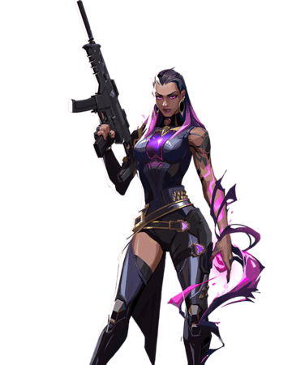
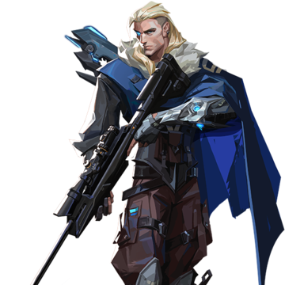

JETT-Dualista
Representing her home country of South Korea, Jett's agile and evasive fighting style lets her take risks no one else can. She runs circles around every skirmish, cutting enemies before they even know what hit them.

Representing her home country of South Korea, Jett's agile and evasive fighting style lets her take risks no one else can. She runs circles around every skirmish, cutting enemies before they even know what hit them.
Raze explodes out of Brazil with her big personality and big guns. With her blunt-force-trauma playstyle, she excels at flushing entrenched enemies and clearing tight spaces with a generous dose of “boom.”

Forged in the heart of Mexico, Reyna dominates single combat, popping off with each kill she scores. Her capability is only limited by her raw skill, making her highly dependent on performance.
The Moroccan information broker, Cypher is a one-man surveillance network who keeps tabs on the enemy's every move. No secret is safe. No maneuver goes unseen. Cypher is always watching.

The stronghold of China, Sage creates safety for herself and her team wherever she goes. Able to revive fallen friends and stave off aggressive pushes, she provides a calm center to a hellish fight.

The genius of Germany. Killjoy secures the battlefield with ease using her arsenal of inventions. If the damage from her gear doesn't stop her enemies, her robots' debuff will help make short work of them.

A phantom of a memory, Omen hunts in the shadows. He renders enemies blind, teleports across the field, then lets paranoia take hold as his foe scrambles to learn where he might strike next.

Ghanaian Agent Astra harnesses the energies of the cosmos to reshape battlefields to her whim. With full command of her astral form and a talent for deep strategic foresight, she's always eons ahead of her enemy's next move.

Breach, the bionic Swede, fires powerful, targeted kinetic blasts to aggressively clear a path through enemy ground. The damage and disruption he inflicts ensures no fight is ever fair.

Born from the eternal winter of Russia's tundra, Sova tracks, finds, and eliminates enemies with ruthless efficiency and precision. His custom bow and incredible scouting abilities ensure that even if you run, you cannot hide.
